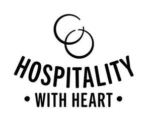

Trade Mark Journal No.2025/026 27 June 2025
UK00004218742 13 June 2025 (9,16,35,41)

- Class 9
- Computer software; media content; databases; encoded cards, charge cards, payment cards, all bearing electronically, magnetically encoded or other recorded data; downloadable electronic publications; electronic and downloadable vouchers and coupons. recordings of sound, information and images stored in digital or analogue form; smart cards; discs and cartridges all bearing or for the recordal of data, sound, information and images; MP3s, JPEGs, MPEGs, CD's; DVD's; mouse mats; telephone accessories and phone covers; parts and fittings for all the aforesaid goods.
- Class 16
- Printed matter; printed publications; books; magazines; newsletters; leaflets and brochures; notebooks; address books; albums; diaries; note cards; greeting cards; post cards; posters; mounted and/or unmounted photographs; stationery; annuals; instructional and teaching materials; book covers; book marks; calendars; paper party decorations; paper napkins; paper place mats; invitations; advertising materials; coasters and mats for beer glasses; organisers; folders; writing and drawing instruments; pen and pencil cases; plastic covered cards bearing printed matter.
- Class 35
- Advertising, marketing, promotion and publicity services; auditing and administration services; business management services; business research services; business consultancy services; business information services; business policy review, development and implementation services; business problem identification, analysis and resolution services; business priority identification and analysis; business reporting services; market research services; marketing services; business research services; compilation of information into computer databases; database management services; writing of publicity texts; research, analysis and development of new and existing organisational and business models, structures, practices and strategies; operation and supervision of loyalty schemes and incentive schemes; retail services, shop retail services, mail order retail services and electronic shopping retail services connected with the sale of food and drink; processing purchase orders; business investigations and surveys; employment research services; employment consultancy services; employment information services; career planning services; compilation of advertisement for use as web pages on the internet and in online transmissions; dissemination of advertising material and promotional matter; compilation of statistics; copywriting services; compiling surveys and indexes of consumer or employee confidence and activity; arranging and conducting of trade, business, and commercial exhibitions; compilation of directories; advisory, consultancy and information services relating to all the aforesaid.
- Class 41
- Education; entertainment; instruction and training services; organizing and conducting classes, events, functions, workshops, training courses, demonstrations, displays, presentations, correspondence courses, lectures, seminars, symposiums, conferences and exhibitions; organisation and conducting of competitions and parties; coaching services; providing training and teaching programs; hospitality services; booking and reservation services for entertainment; booking and reservation services for recreational activities and events; booking and reservation services for leisure activities and events; provision of non-downloadable multimedia content; correspondence courses; practical training; publication of books; publication of electronic books and journals online; publication of texts; news gathering services; news reporting services; provision of news information; provision of training facilities and instructional materials; continual professional development services; tuition services; advisory, consultancy and information services relating to all the aforesaid.
Old Kentucky Restaurants Limited
Representative: Brandsmiths SL Limited